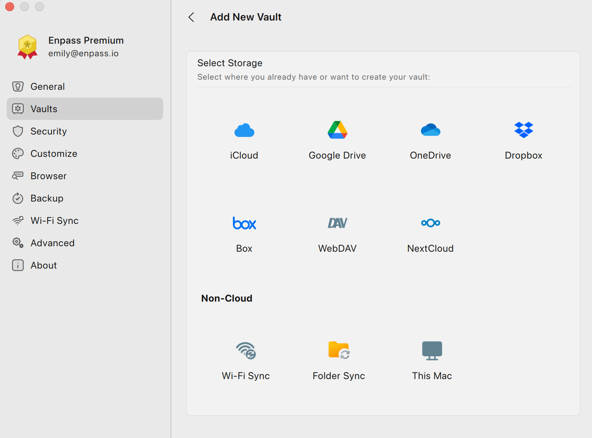

Enpass 为什么敢不搭自己的服务器
大多数密码管理器都把你的加密数据存在自家云端，Enpass 偏不。它选择了一条反主流的技术路线——让用户自己选存储，让我从架构层面拆解这套设计的底层逻辑与真实代价。
开头：一个反常的问题
做密码管理器，第一反应是什么？搭一个云服务器，把加密后的密码库存上去，用户换设备时从服务器拉数据下来同步——这几乎是行业默认套路。1Password、Bitwarden、Dashlane，全是这个模式。但 Enpass 偏不——去它的官网看一眼首页，你就能感觉到这种产品哲学的区别。
你第一次启动 Enpass 时，它不会引导你注册一个 Enpass 账号，也不会让你把密码库存到它的云端。它问你的第一个问题是：你想用 iCloud、Google Drive、Dropbox 还是本机文件夹来存你的保险库？
这不是偷懒，也不是小团队买不起服务器。这是一套深思熟虑的架构选择——我想从四个层面拆解它为什么要这么设计、这套选择背后的技术细节、它的真实代价，以及这对你意味着什么。
拆解：Vault 到底是什么
要理解 Enpass 的架构，首先得搞清楚一个核心概念：Vault（保险库）。
在 Enpass 里，一个 Vault 就是一个独立的加密数据库文件。不是一行行存在某个服务器数据库里的记录，是一个实实在在的 .enpassdb 文件——可以放在你电脑的任何一个文件夹里，可以被你的云盘当成普通文件同步，可以被你用 U 盘拷来拷去。每个 Vault 用 AES-256 + SQLCipher 加密，解锁它只需要主密码（可选再加一个 Keyfile）。

想亲自体验这套 Vault 机制，从下载拿一份客户端就能开始。
这个设计带来了一个很有意思的推论：Enpass 本身从架构上就不可能丢失你的数据。你的密码库存在哪台云盘、哪个文件夹、甚至哪块硬盘上，完全由你决定。Enpass 只是一个读写加密文件的客户端工具——没有服务器意味着没有服务器被攻破的风险、没有服务器被封禁的焦虑、也没有"我忘了续费所以数据被清空"这种闹剧。
不只是一个 Vault
更妙的是，Enpass 允许你创建多个 Vault，每个有独立的加密文件、独立的存储位置、甚至独立的密码。主保险库（Primary Vault）在首次启动时自动创建，它的密码同时解锁整个 Enpass 应用；次级保险库（Secondary Vault）由你后续按需添加，可以用来把工作和生活彻底隔离、给家人开一个共用库、或者把最敏感的银行密码单独锁在一个更强加密的 Vault 里。
这个多 Vault 机制和它的无服务器架构是天然配套的——如果 Enpass 有自己的云，多 Vault 就得在服务端做分区存储、做权限控制、做分享体系；但在 Enpass 的设计里，多 Vault 就是在你选的云盘里多放几个独立的加密文件，每个文件自己同步、自己加密、自己控制访问。Enpass 不做任何服务端逻辑，所有复杂度都被推到了客户端和云盘层。
分享：利用云盘的原生能力
这套设计哲学在 Vault 分享机制上体现得最彻底。
绝大多数密码管理器的分享流程是：选中某条密码 → 点"分享" → 服务端用接收方的公钥加密后转发 → 对方 App 解密接收。这个流程的好处是细粒度——可以精确到"这个人能看不能改"、"这条条目只分享 7 天"。但坏处是，你的分享行为经过了服务端——服务端知道你分享了什么、分享给谁、什么时候分享的。
Enpass 的分享机制完全绕过了服务端：你创建一个专门的家庭共用 Vault，存在你的 Google Drive 上，然后在 Google Drive 里给对方开文件访问权限。对方在自己的 Enpass 里"添加已有 Vault"，用你的 Google 账号登录一次（用完退出），输入 Vault 的独立密码，就能在自己的设备上得到这个加密文件的本地副本。全程没有任何一步经过 Enpass 的服务器——Enpass 只负责在两端读写同一个加密文件，分享这件事完全是你和云服务商之间的事。

这种"利用云盘原生能力"的思路延伸到了它的每一个功能点：同步靠云盘版本管理、备份靠本地定时拷贝 + 云盘版本历史、设备间传输靠 Wi-Fi 直连扫描二维码、家庭共用靠云盘共享文件夹。Enpass 把自己定位成一个纯粹的加密文件管理客户端，它不做任何它认为"云盘已经做得很好"的事情。
代价：这套设计的真实边界
说了这么多优点，这套架构的代价也很实实在在，不回避。
第一，依赖云盘的稳定性和安全性。 Enpass 不拥有你的数据，意味着你的数据安全性直接绑定了你选的云服务商。Google Drive 被封了？你的 Vault 也没了。iCloud 同步出 bug 导致文件冲突？Enpass 没有服务端冲突解决机制——它只能提示你手动选一个版本。云盘自己的版本历史通常只有 30 天（Google Drive 免费版）到 60 天（Dropbox 免费版），如果你误删了一条密码，30 天后发现，那 Enpass 的自动备份——根据Enpass文档的说明，默认保留最近 60 份，每天一份，存在你本机的 Documents/Enpass Backups/ 里——可能是你唯一的救命稻草。
第二，分享的粒度很粗。 因为分享的是整个 Vault 文件，你没法像 1Password Family 那样精确到"只分享这一条、那个人只能看不能改"。Enpass 的设计里，最接近权限控制的手段是给不同 Vault 设不同的云盘权限——但这终究只是"全有或全无"的粗粒度。
第三，没有真正的跨设备自动发现。 用 Bitwarden 的话，你在手机上改了一条密码，打开桌面端自动就同步了——因为服务端是所有设备的汇聚点。Enpass 不设服务器，同步完全依赖云盘的文件变化监听，延迟取决于云盘客户端的扫描间隔，有时候快得像实时，有时候会慢上几十秒。Wi-Fi Sync 倒是彻底不经过云，但需要两台设备在同一局域网、手动扫描二维码，不能后台自动同步。
第四，Passkey 这种新特性天生难以支持。 Passkey 的设计本身就是绑定在线账户体系的——它需要浏览器和网站之间通过 WebAuthn 协议交互，而 Enpass 作为纯客户端加密文件管理工具，只能"存储 Passkey"但没法像 Bitwarden 那样深度集成操作系统和浏览器的 Passkey 流程。这不是功能开发优先级的问题，是架构层面的根本差异。
判断：适合谁、不适合谁
那么，Enpass 这套反主流架构到底适合什么人？
如果你对"第三方不应该持有我的敏感数据"这件事有执念——不管是出于隐私、合规、还是单纯的不信任——Enpass 几乎是主流密码管理器里唯一能让你做到真正的"数据主权"的选择。你不需要信任 Enpass 的服务器安全，因为它根本没有服务器需要你信任；你不需要担心 Enpass 会不会被黑客攻破，因为你的加密文件分散在你自己控制的各个位置。
如果你需要把工作密码和个人密码、家庭共用密码和自己的私密密码彻底物理隔离——多 Vault 机制配合独立存储位置（工作 Vault 存公司 OneDrive、家庭 Vault 存共享 Google Drive、个人主库存 iCloud、最敏感的银行 Vault 直接存在本机不碰任何云），Enpass 是少有的能让你做到这一点的工具。
但如果你需要的是开箱即用的完美体验——换设备零配置自动同步、家人之间精细的权限控制、浏览器 Passkey 无缝集成、团队级的统一管理——Enpass 这套架构的代价会让你感到处处掣肘。这些体验上的差距不是 Enpass 团队不想做，是"不搭服务器"这个根本设计前提决定了很多事做不了。
最后
我自己用了两年多 Enpass，从 iCloud 同步换到 Wi-Fi Sync，从单 Vault 拆到三个 Vault，中途还试过换回 Bitwarden 又退回来。最直观的感受是：Enpass 不追求"把所有事都做好"，它只做一件事——用客户端加密安全地管理你的密码文件——然后把其他所有事都交给你已经信任的云服务商。
这是一种克制。也是一种坦诚。
相关资料我整理到了三个仓库，方便你按需取用：GitHub、Gitee 和 GitCode 上都有 Enpass 的文档目录，内容是同步的，哪个访问方便就看哪个。